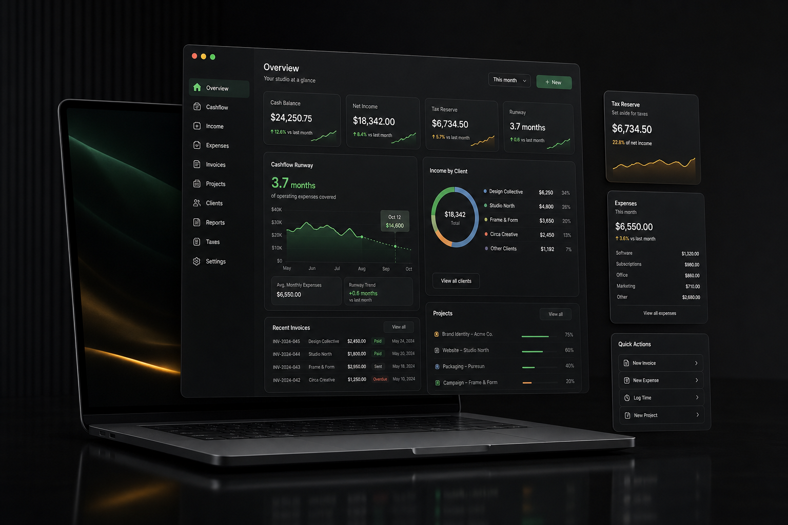

Finance OS for independent creative businesses
Run your studio with cashflow clarity.
StudioReserve tracks client income, tax reserve, project margin, retainers, invoices, and runway in one local-first desktop cockpit.
Freelancers
Creators
Boutique studios
Local-first

Built for a specific operator
Not another generic budget tracker.
Retainers collected
$8.4k
Tax reserve target
$2.3k
Open invoices
$10.4k
Studio margin
54%
Runway
6.2 mo
Professional workflow
A cockpit for the money decisions behind creative work.
Studio cockpit
Runway, tax reserve, collected income, and studio margin stay visible at the top of the workspace.
Client portfolio
Monitor retainer quality, project value, and client health without turning your finances into a spreadsheet maze.
Project profitability
Compare budget and spend while projects are still active enough to correct.
Backup ready
Use local data today, then connect Google or Facebook sign-in when encrypted backup is configured.
Private by default
Your studio books start on your machine.
StudioReserve is designed as a desktop app first. The product can work locally without an account, while future cloud backup can be added through a secure OAuth-backed vault.
Local-first ledger
JSON export backup
Google and Facebook auth hooks
Windows and macOS packaging
Desktop install
Install the studio finance cockpit.
Windows uses an `.exe` installer. macOS uses a `.dmg` installer, which is the native macOS distribution format.
StudioReserve Setup.exe
Installer target for Windows 10 and Windows 11.
Download Windows installerStudioReserve.dmg
Native installer target for macOS desktop users.
Download macOS installer
Build commands
npm run build:win
npm run build:mac